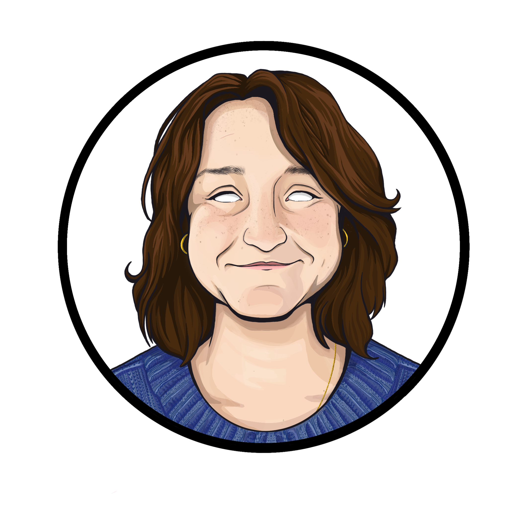

My name is Sofia.
I'm a designer.
Welcome to Sofinelli Studios. My name is Sofia Spinelli. I am a 2026 graduate of the Graphic Design + Illustration program at the University of South Carolina. I like to make art of all mediums but specialize in illustration, design, animation and web development. Creating meaningful and clear art is what I enjoy the most!